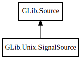

GLib.Unix.SignalSource – glib-2.0 Reference Manual
Packages
glib-2.0
GLib
Unix
SignalSource
SignalSource
SignalSource
Object Hierarchy:

Description:
[
CCode
( cname =
"GSource"
) ]
public
class
SignalSource
:
Source
Namespace:
GLib.Unix
Package:
glib-2.0
Content:
Creation methods:
public
SignalSource
(
int
signum)
Inherited Members:
All known members inherited from class GLib.Source
CONTINUE
REMOVE
add_child_source
add_poll
add_unix_fd
attach
check
destroy
dispatch
get_can_recurse
get_context
get_current_time
get_id
get_name
get_priority
get_ready_time
get_time
is_destroyed
modify_unix_fd
prepare
query_unix_fd
remove
remove_by_funcs_user_data
remove_by_user_data
remove_child_source
remove_poll
remove_unix_fd
set_callback
set_callback_indirect
set_can_recurse
set_funcs
set_name
set_name_by_id
set_priority
set_ready_time